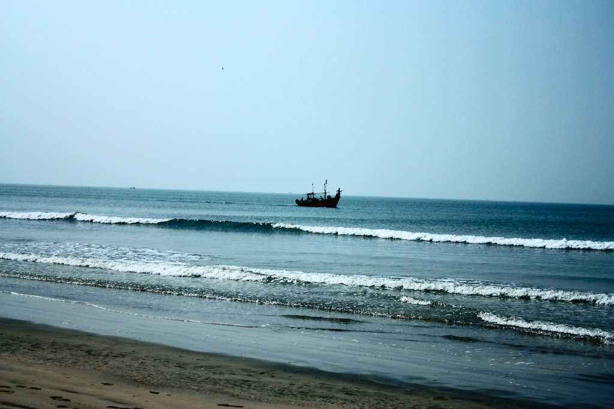
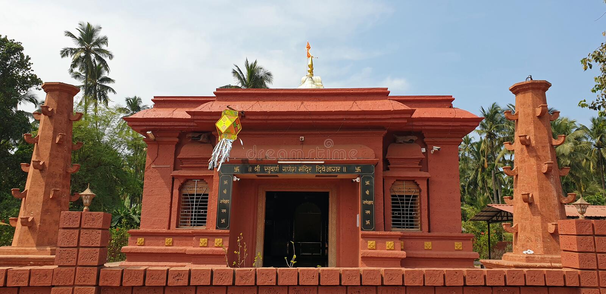

Diveagar (Dive Agar) is a village located in Shrivardhan Taluka, Raigad district in the Indian state of Maharashtra,[2] approximately 170 kilometers south of Mumbai. The region includes a fishing settlement, a beach, a temple, local businesses engaged in coconut and beetle nut tree farming, and some tourism businesses such as restaurants, cottage rentals and hotels, and six villages (from north to south): Velas, Musalmāndi, Agar Panchaitan, Diveagar, Borli Panchatan, and Karle. A Suvarna Ganesh Mandir with lord Ganesh idol of gold is famous in Diveagar for tourists, the Ganesh idol was stolen on 24.3.2012 by some miscreants. The beach, facing the Arabian Sea, is approximately four kilometres long[3] and undeveloped. At the north end of the beach where a small stream enters the ocean there is the fishing settlement, Velas Agar, and some paddy farming, while at the south end there is a sanctuary for migratory seabirds. Nearby, there is a small fishing village, where vendors sell fresh fish, which goes by name of Bharadkhol.[4] The beach is accessible from the Mumbai-Goa highway via Kolad or Karnala. The beach contains a number of suru trees (Casuarina), which are common to coastal Maharashtra. The access to the beach has a dense cover of belu trees, which are otherwise uncommon in the area.[5]
How to reach Diveagar by Air
There is no airport in Diveagar and the nearest airport to this city is located in Pune which is 160km from here. From Pune you can board a bus or pre-paid taxi to reach this city. Various flights from all the major cities land on this airport.
How to reach Diveagar by Rail
There is no railhead in Diveagar. One has to catch a taxi or bus to reach this place as it is well connected by road.
How to reach Diveagar by Road
There are regular buses from Mumbai and Pune to reach Diveagar. One can take state or private buses to reach Diveagar conveniently. The city is at a distance of 170 km from Mumbai, 90 km from Raigad and 35 km from Harihareshwar shrine. Thus, you don’t need to worry about how to reach Diveagar.